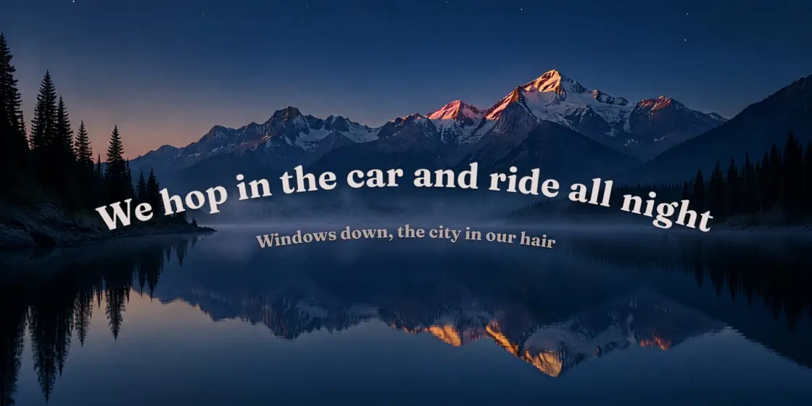

Rimlight
bordervisualizerThe edges of your screen glow with your music. Colors come from the album art and motion comes from the beat, drawn by custom HLSL and Metal shaders.
WindowsmacOSFree download
github.com/sussyswimmer
Desktop apps that glow and sing along with whatever you're playing, a workshop for running AI coding agents, and small tools that make writing easier. Built for Windows and macOS.
About me
I make software that reacts: to the song you're playing, the sentence you just wrote, the agent you just gave a job.
Most of what I build lives right on the desktop. Rimlight lights up the edges of your screen with your music, and Undertone puts the lyrics on it, word by word. Lately I've been building tools for working alongside AI agents, and when I'm not doing that I'm writing a match simulator for FRC robotics.
I care about the small stuff: colors pulled from the album art, motion that lands on the beat, and apps that keep your data on your own machine.
Favorite repos
Watch the edges of this page as you scroll. They take on each project's colors, the same way Rimlight pulls colors from album art.
The edges of your screen glow with your music. Colors come from the album art and motion comes from the beat, drawn by custom HLSL and Metal shaders.

Synced lyrics on your desktop, word by word, for whatever you're playing. Every song gets its own look, colored from its cover. Free and open source.

A study for working with several coding agents at once. Each agent is a familiar with its own name, brief, budget and workspace, and nothing it does outside that workspace happens until you give it your seal.

A draggable little companion for Claude Desktop on macOS. It watches the Claude app you already use and reacts to it, with no extra login, and your prompts never leave your Mac.
A Chrome side panel that reads the sentence you just wrote and suggests the transition that fits what comes next, even inside Google Docs. Around 520 phrases still work offline with no key.
Just getting started
A new website I'm building. Nothing's pushed yet, so star the repo to see it the day it goes live.
What's next
© 2026 sussyswimmer
Hero and desk loops made with Higgsfield (GPT Image 2 + Seedance 2.0)